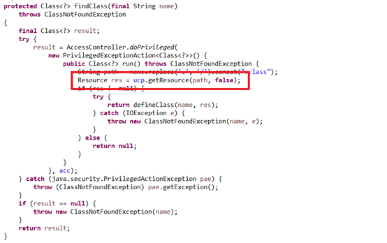
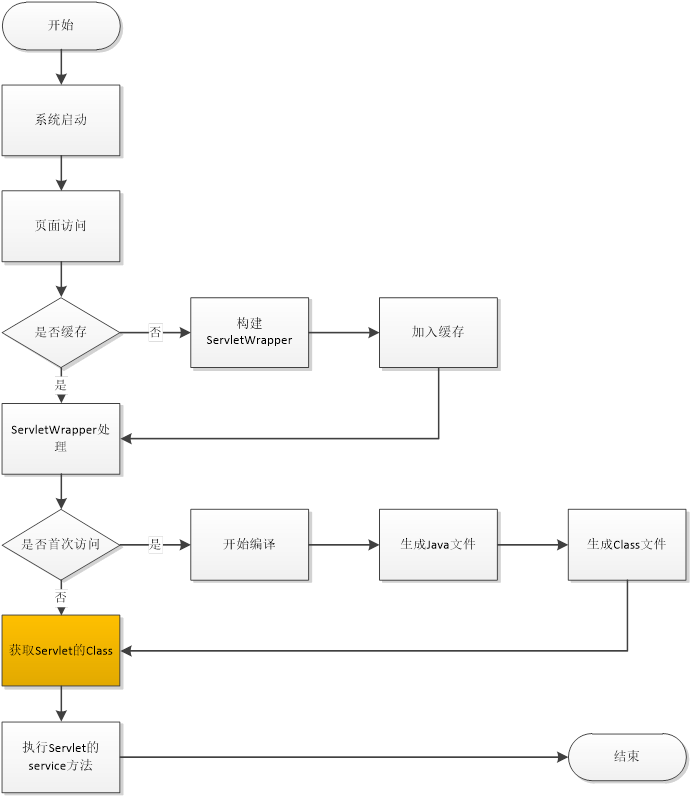

一个Slash引发的ClassNotFound血案
公司开发了一款Web应用，开发架构基于Spring Boot，通过jar包的方式发布到服务器并通过命令行运行在内置的Tomcat上。上线将近一年，一切都是那么的风平浪静，然而一切的平静被上周的一次现场算法回访打破。
我们的数据分析人员本意只是想查看一下历史数据来确认算法的表现符合预期，结果发现历史数据查询页面怎么点都没有反应，而其他页面都是正常的，服务重启后一切恢复正常。
问题重现
虽然问题通过服务重启后成功解决，但是出错的原因没有定位到也就意味着再次出错的可能性依然存在。
分析问题最直观的方式就是从错误出发，通过错误信息来反向推导错误发生的场景。在这个案例中我们查看了浏览器控制台和后台错误日志，最终获取了准确的错误信息：
1 | |
这是一个ClassNotFoundException，通过错误信息我们可以在搜索引擎上找到一堆解答，甚至在Spring Boot的Github上都有类似的情况(https://github.com/spring-projects/spring-boot/issues/5009)。
结果总结下来就是：
Spring Boot内置的Tomcat会在系统根目录的/tmp下创建Tomcat开头的临时目录，tmp目录的定时清理会导致部分文件的class文件找不到，解决办法是指定一个work目录不要使用默认的tmp目录。
听起来很有道理，官方都这么说了那照着做就行了呗。
然而作为一个好奇心爆棚的程序员，这样的解释显得苍白而无力，但是这个解释倒是给我们的重现提供了很好的便利，毕竟只有充分重现了这个问题才能更好的去探究深层次的原因。
于是在官方解释的指导下，我们进行了多次重现的尝试，最终将问题范围缩小如下：
在Tomcat启动后将tmp下的ROOT目录删除，访问的第一个页面会出现无法访问的情况，后台出现ClassNotFoundException，之后再访问其他页面都是正常。
问题分析
在进行问题分析的时候，我们一般会使用三种方式
经验法
结合自身的经验来猜测问题发生的可能原因，然后通过验证来定位问题具体原因
推导法
从问题的发生点开始倒推，沿着问题发生的路径逐步接近问题的根源
分析法
分析整个流程中的每一个节点，找到和问题可能相关的节点逐个验证从而找到导致问题的节点
经验法往往是遇到问题时第一个使用的方法，因为面对问题时冲在前面的往往是我们的直觉。在这个问题中我做了以下猜测，并逐一验证。
class文件损坏
做出这个假设的依据是，在同一个目录下存在两个页面的Class文件，一个可以访问一个不可以访问。
验证方法也很简单，首先重启服务正常访问页面A获取到正常状态下的A.java和A.class文件；重启服务器后删除ROOT目录，再访问页面A触发错误，将目录下的java和class文件替换成正常状态的问题；再次访问页面，依然报错。
至此我们推翻了我们关于Class文件损坏的假设。
dev-tool导致classloader不一致
做出这个假设的依据是我们之前遇到的一个dev-tool的问题，Spring Boot在引入了dev-tool后会进行热加载，这时候由于jar包加载和class加载使用了不同的ClassLoader会出现ClassNotFoundException。
我们之前解决这个问题的方法是去掉dev-tool，同样在这里我们也可以去掉dev-tool再走一遍重现步骤，发现问题依然存在。
至此我们排除了Dev-tool导致ClassLoader不一致的假设。
class文件时间戳
在我们查看正常文件和异常文件差异的时候发现，正常文件的时间戳和jar包中的jsp时间戳一致，而异常文件的时间戳是当前时间，那会不会是因为时间戳不一致导致的呢。
为了验证这个假设我们从两方面入手a) 调整正常文件的时间戳到当前时间，结果正常文件依然正常 b) 调整异常文件的时间戳为jsp的时间，结果异常文件依然无法访问。
于是我们也排除了Class文件时间戳的假设。
推导法是比较直观也是可以比较快速的发现问题的方法，但是在我们这个案例中我们发现错误堆栈中的URLClassLoader并不是问题发生的第一现场，真正的第一现场在java自己的包中，对我们逐步跟踪问题造成了困难。
鉴于此我们选择分析法作为我们解决问题的突破口。当然还有一个重要条件支持我们采用分析法解决问题，那就是在我们这个案例中我们存在OK和NOK两种情况，在每一个分析的节点我们都可以引入两种情况进行对比。
在开始之前，由于要每一步比较差异，我们需要配置Eclipse的远程调试。传送门：(https://www.cnblogs.com/east7/p/10285955.html)
首先我们梳理一下Tomcat解析JSP的流程，由于我们基于类来描述流程，所以先罗列一下涉及的类以及主要的方法：

JspServlet类是主入口，接收jsp请求；
JspRuntimeContext通过add和get方法来维持一个ServletWrapper的缓存；
从JspServlet往后是加载的主要类，而从Compiler往后的类是编译用到的类。
在大致了解了内部类结构后我们可以来看看Jsp加载的流程了，
从图中可以看出我们的报错点在获取Servlet的class这一步，那么我们从页面访问的步骤一步步比较OK和NOK表现的差异。
获取ServletWrapper
这一步的作用是为每一个Jsp页面构建一个代理并缓存在JspRuntimeContext中，这样每次访问页面直接获取代理即可。从调试的结果看，构建wrapper的每个参数都是一样，而构建的wrapper结果也是一致的。
编译java文件
我们注意到在Complier.class的generateJava这个方法中有一步是：
1
ctxt.checkOutputDir();我们的重现恰恰是删除了ROOT目录，继续进去看代码
1
2
3
4
5
6
7
8
9
10
11
12
13
14
15
16
17
18
19
20
21
22public void checkOutputDir() {
if (outputDir != null) {
if (!(new File(outputDir)).exists()) {
makeOutputDir();
}
} else {
createOutputDir();
}
}
//由于一开始的outputDir为空会进入createOutputDir方法
try {
File base = options.getScratchDir();
baseUrl = base.toURI().toURL();
outputDir = base.getAbsolutePath() + File.separator + path +
File.separator;
if (!makeOutputDir()) {
throw new IllegalStateException(Localizer.getMessage("jsp.error.outputfolder"));
}
} catch (MalformedURLException e) {
throw new IllegalStateException(Localizer.getMessage("jsp.error.outputfolder"), e);
}这里对baseUrl进行赋值，联想到之前看到一个关于UrlClassPath加载资源的解读，ucp类会根据baseUrl来加载不同的loader进行资源加载。通过debug我们发现这个地方的baseUrl在OK和NOK两种情况下确实存在差异。
1
2
3
4
5NOK：
baseURL = file:/tmp/tomcat.2612162063177545213.9090/work/Tomcat/localhost/ROOT
OK：
baseURL = file:/tmp/tomcat.2612162063177545213.9090/work/Tomcat/localhost/ROOT/对照ucp的代码
1
2
3
4
5
6
7
8
9
10
11
12
13
14
15
16
17
18
19
20
21
22private Loader getLoader(final URL url) throws IOException {
try {
return java.security.AccessController.doPrivileged(
new java.security.PrivilegedExceptionAction<Loader>() {
public Loader run() throws IOException {
String file = url.getFile();
if (file != null && file.endsWith("/")) {
if ("file".equals(url.getProtocol())) {
return new FileLoader(url);
} else {
return new Loader(url);
}
} else {
return new JarLoader(url, jarHandler, lmap, acc);
}
}
}, acc);
} catch (java.security.PrivilegedActionException pae) {
throw (IOException)pae.getException();
}
}我们发现当出现”/”的时候我们是通过fileLoader来加载资源，而没有”/”的情况我们默认到jarLoader，用jarLoader去加载一个文件路径当然会返回ClassNotFound了。
至此我们终于将这个问题的来龙去脉理清楚了，那这一个“/”的差异是怎么来的呢，回到那段代码片段：
1 | |
OK和NOK的情况base是一样的，唯一的区别就是OK的情况文件目录都是存在的，而NOK的时候文件夹是没有的，是不是这种差异导致了一个”/”的差异呢，还是看代码吧：
1 | |
从上面的代码可以看出只有满足isDirectory的判断才会给URI加上”/”，在我们NOK的情况下由于文件夹不存在isDirectory返回false不会加上结尾的”/”，导致了baseURI的差异，并最终导致了ClassNotFoundException的生产血案。
总结
在这个案例中我们主要使用了经验法和分析法来定位问题，查找本源。
在经验分析的过程中我们遇到了阻碍，转而通过分析法分解了Tomcat对于Jsp请求的处理流程，在分析Jsp编译过程时发现会对baseURI进行赋值，结合我们已有的对URLClassLoader的加载过程的理解，于是我们对于baseURI的处理进行了着重分析。最终发现由于baseURI赋值时系统环境的差异导致了生成的baseURI产生了一个”/”的差异，而这一个差异又导致资源加载的加载器选择差异，最终导致不合适的加载器加载不到资源的错误。
在问题的解决上我们还是沿用官方的说法，指定一个tmp url用来存放tomcat的临时文件，避免被删除。
参考材料：
http://www.docjar.com/html/api/sun/misc/URLClassPath.java.html